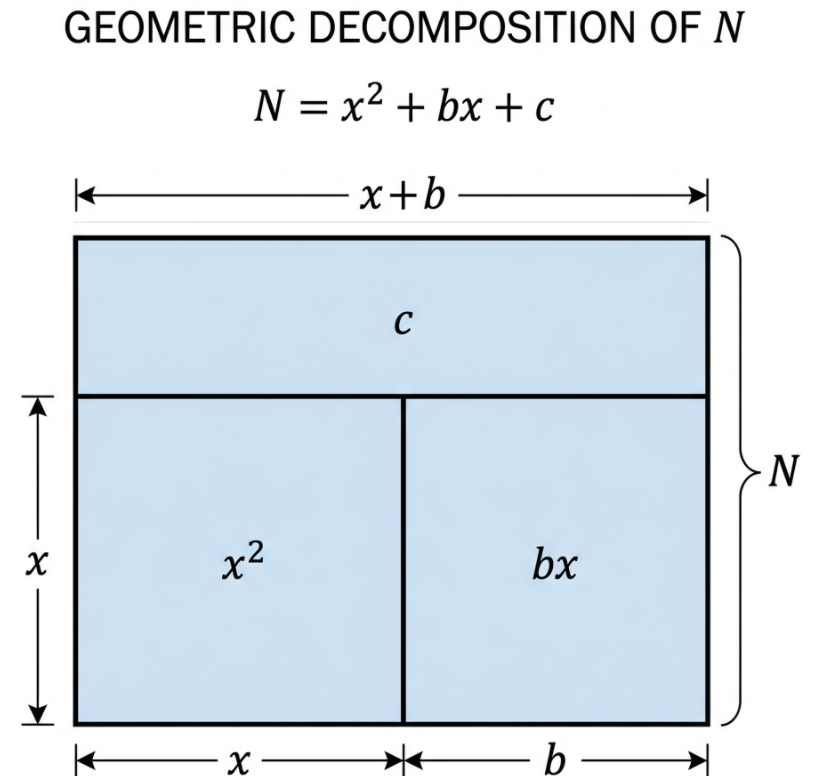

Il Meccanismo Geometrico e la Ricorsione
Il caso c = 0
Un teorema diretto del nostro approccio stabilisce che, se dopo aver calcolato lo sbilanciamento otteniamo un residuo nullo ($c = 0$), il modulo $N$ è già fattorizzato. La soluzione si riduce immediatamente a: $N = x(x+b)$, rivelando i due fattori senza ulteriori passaggi.
La Dimensione di c e la Ricorsione
Quando estraiamo un valore casuale $x < \sqrt{N}$, la definizione del coefficiente $b = \lfloor(N - x^2)/x\rfloor$ come parte intera garantisce matematicamente che il resto $c$ sia strettamente minore di $x$. Di conseguenza otteniamo $c < \sqrt{N}$.
Il fatto che $c$ sia un numero estremamente più piccolo di $N$ apre le porte alla via ricorsiva: applichiamo lo stesso identico algoritmo a cascata direttamente su $c$, alla ricerca di quella specifica fattorizzazione in cui la somma delle radici dia lo sbilanciamento primario ($x_1 + x_2 = -b$).
Caso di Studio: La Finestra di Ridondanza (W)
I metodi tradizionali implicano che se "peschi" un numero casuale sbagliato, il tentativo è fallito e devi ricominciare da capo. Con NOSEC, un'estrazione non esatta porta comunque alla soluzione corretta.
Anche estraendo una variabile di base $x$ che non è un fattore, lo scarto generato ($c$) rientra all'interno di un'area ben definita, chiamata Finestra di Ridondanza (W). All'interno di questa finestra è possibile riapplicare le equazioni, isolare la giusta traiettoria e forzare il collasso dell'algoritmo sui fattori reali di $N$.
Simulatore Geometrico Libero
Inserisci il Modulo $N$ complessivo ed estrai la variabile di base $x$. Il motore algebrico calcolerà istantaneamente lo sbilanciamento $b$ e il residuo $c$ adattando la struttura del rettangolo. Se $c=0$, la fattorizzazione è completa.
Struttura del Rettangolo Frattale
Se $\Delta$ non è un quadrato perfetto, l'algoritmo riapplica la scomposizione sul residuo $c$ (garantito essere minore di $\sqrt{N}$), scendendo nei nodi inferiori come illustrato di seguito:

Area Risorse e Download
Accedi agli strumenti software compilati per l'esecuzione del framework sui cluster ed esamina la documentazione scientifica completa.
Spazio Discussione e Commenti
Lascia un commento, condividi i tuoi test o richiedi chiarimenti matematici sulla finestra di ridondanza e sul calcolo iterativo.